"Python"
Consigo desenvolver programas simples e automatizar algumas tarefas, mas ainda estou longe de ser um especialista. Estou sempre buscando aprender mais e melhorar minhas habilidades na linguagem.
Apaixonado por tecnologia, academia, café e filosofia. Este sou eu! Estou tentando aumentar meu portfólio de projetos práticos e este será o site inicial que servirá como vitrine.
.png)
Meu nome é Elto Borges, sou estudante do curso técnico em Informática no INSTITUTO FEDERAL DO PIAUÍ - IFPI (PICOS), atualmente no segundo ano do ensino médio. Sou um grande entusiasta de programação, robótica, desenvolvimento e inovação, em busca de oportunidades na área de TI para acumular experiências enriquecedoras para meu currículo. Destaco minha capacidade de atuar em diferentes setores dentro do campo da tecnologia. Minha paixão por pesquisa e desenvolvimento me impulsiona a explorar novas tecnologias e tendências de mercado, colaborando ativamente em projetos acadêmicos para introduzir ideias inovadoras. Além disso, minha compreensão dos conceitos básicos de suporte técnico me permite identificar e resolver efetivamente problemas do sistema operacional. Por fim, minha dedicação à aprendizagem contínua em linguagens de programação e desenvolvimento de software me permite criar soluções eficientes e buscar aprofundar meu conhecimento em linguagens de programação e tecnologias em geral. Estou comprometido em contribuir significativamente para o progresso e a inovação no campo da tecnologia.
Atualmente, estou estudando o curso técnico em Informática integrado ao ensino médio no Instituto Federal do Piauí - IFPI (Picos) e percebi que a tecnologia é minha área de atuação na sociedade. Para o futuro, pretendo ingressar no curso de Análise e Desenvolvimento de Sistemas, buscando constantemente oportunidades para enriquecer meu currículo e colaborar em uma empresa de tecnologia. Após concluir o curso de ADS, pretendo direcionar meus esforços para uma graduação em Ciência da Computação ou Engenharia da Computação, com especialização em desenvolvimento de inteligência artificial. Além dos objetivos puramente acadêmicos, tenho o desejo de um dia fundar minha própria empresa de automação e próteses tecnológicas, com foco em baixos custos de produção e venda, fazendo a diferença na vida das pessoas.
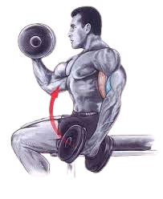
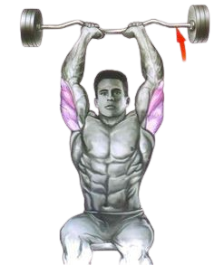
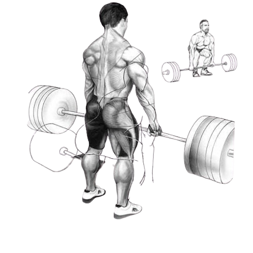
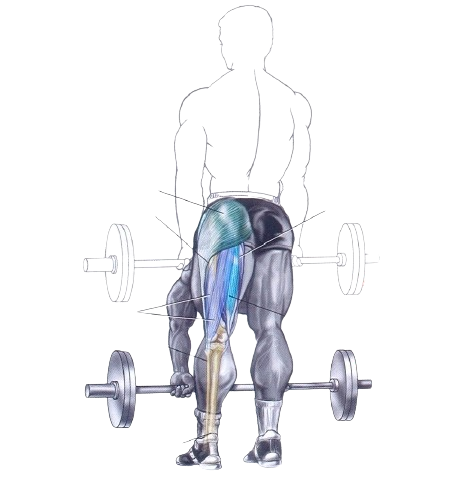
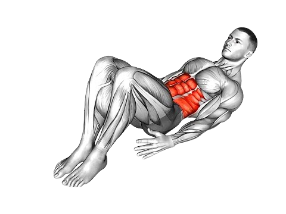
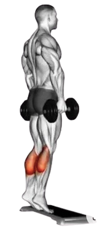

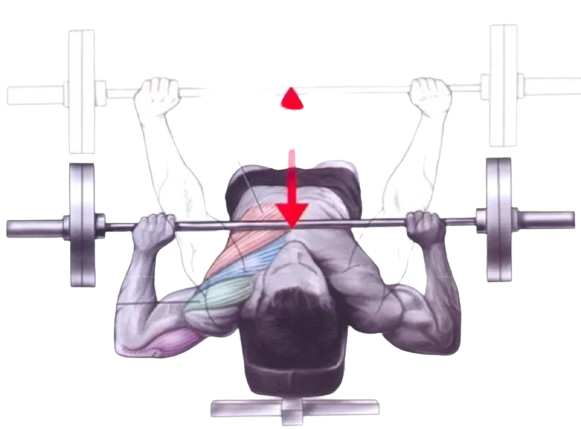
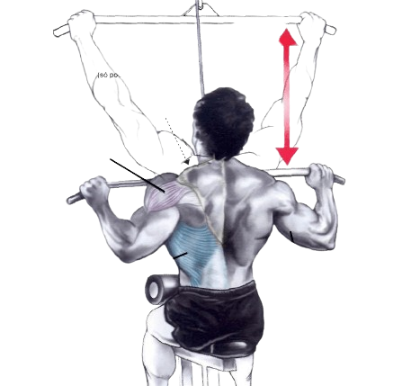
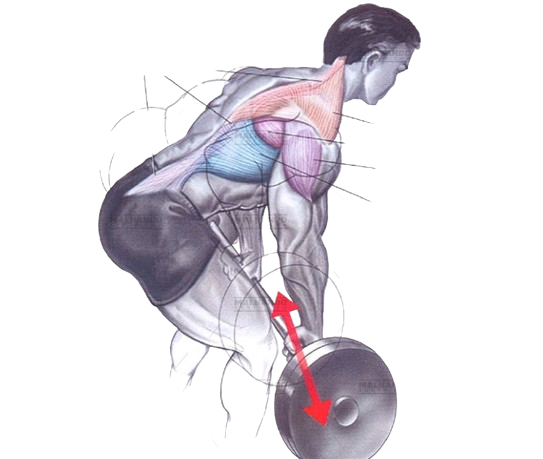
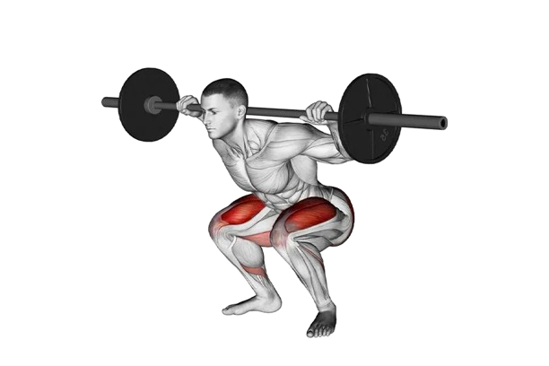
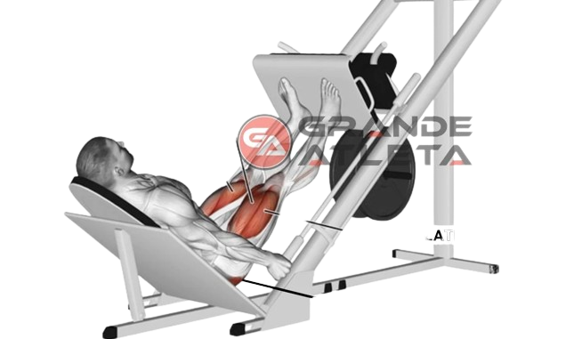
HOMEM DE GIZ
"O Homem de Giz" é um thriller psicológico escrito por C.J. Tudor que combina elementos de suspense, mistério e nostalgia. A história segue um grupo de amigos de infância que se envolvem em um pacto sinistro após a descoberta de estranhos desenhos de giz que os conduzem a um corpo morto. Anos mais tarde, o protagonista, Eddie, é confrontado com eventos do passado quando retorna à sua cidade natal para resolver mistérios não resolvidos e confrontar seus próprios demônios. O livro explora temas de amizade, segredos sombrios e a natureza do medo, mantendo os leitores envolvidos em uma trama cheia de reviravoltas e suspense até o final surpreendente.
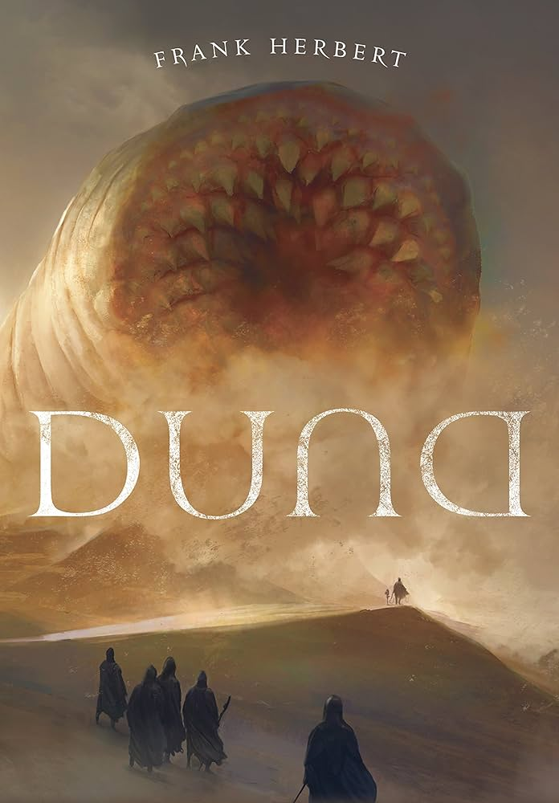
DUNA
"Duna" é uma obra-prima da ficção científica escrita por Frank Herbert. Situado em um futuro distante, o livro narra a história do jovem Paul Atreides, cuja família é designada para governar o planeta desértico de Arrakis, único produtor da especiaria melange, a substância mais valiosa do universo. A trama aborda questões de política, religião, ecologia e poder enquanto Paul enfrenta desafios políticos, intrigas familiares e os perigos do deserto de Arrakis. Herbert tece uma narrativa complexa e envolvente, repleta de personagens cativantes e uma rica mitologia. "Duna" é aclamado por sua originalidade, profundidade temática e influência duradoura no gênero da ficção científica.
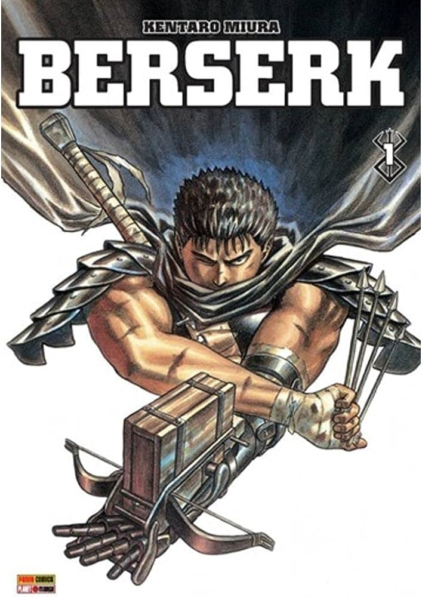
BERSERK
"Berserk" é uma série de mangá japonesa escrita e ilustrada por Kentaro Miura. A série se enquadra principalmente nos gêneros de ação, fantasia sombria e horror. Ela segue a jornada de Guts, um guerreiro mercenário marcado por uma tragédia brutal, enquanto ele luta contra seres demoníacos em um mundo medieval sombrio e implacável. "Berserk" é conhecido por sua narrativa intensa, personagens complexos e temas profundos, incluindo a luta pelo significado da vida, a natureza do bem e do mal, e a busca pela redenção. A série é famosa por sua arte detalhada e visceral, bem como por suas cenas de violência gráfica e conteúdo adulto.
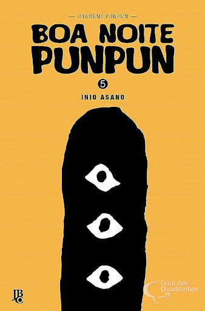
OYASUMI NO PUNPUN
"Oyasumi Punpun" é uma série de mangá japonesa escrita e ilustrada por Inio Asano. A obra se enquadra nos gêneros de drama, psicológico e slice of life. A história acompanha a vida de Punpun Punyama, um jovem desenhado de forma estilizada como um pássaro, enquanto ele cresce enfrentando desafios familiares, amorosos e existenciais. O mangá explora temas como alienação, depressão, sexualidade, relações disfuncionais e a busca por significado na vida. "Oyasumi Punpun" é conhecido por sua narrativa complexa e emocional, bem como por sua arte distintiva e expressiva. A obra é aclamada por sua profundidade psicológica e sua representação realista das lutas da juventude e da condição humana.
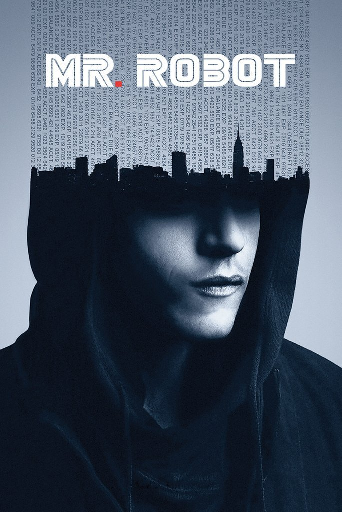
MR.ROBOT
"Mr. Robot" é uma série de TV criada por Sam Esmail, centrada em Elliot Alderson, um programador com transtorno de ansiedade social que se envolve em atividades de hacking lideradas por um misterioso líder chamado Mr. Robot. A série aborda questões sociais e tecnológicas, incluindo vigilância em massa e controle corporativo, mantendo os espectadores envolvidos com uma narrativa complexa e reviravoltas surpreendentes.
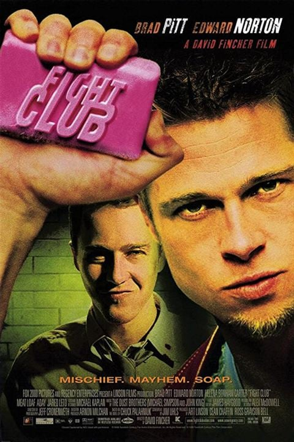
CLUBE DA LUTA
"Clube da Luta", livro e filme dirigido por David Fincher, segue um homem sem nome que enfrenta a monotonia da vida e forma um "Clube da Luta" com Tyler Durden, buscando significado na violência e no caos. A história explora temas como masculinidade, alienação e consumismo, com uma abordagem provocativa e reviravoltas surpreendentes. Tanto o livro quanto o filme se tornaram cultuados por sua narrativa única e filosofia subversiva.
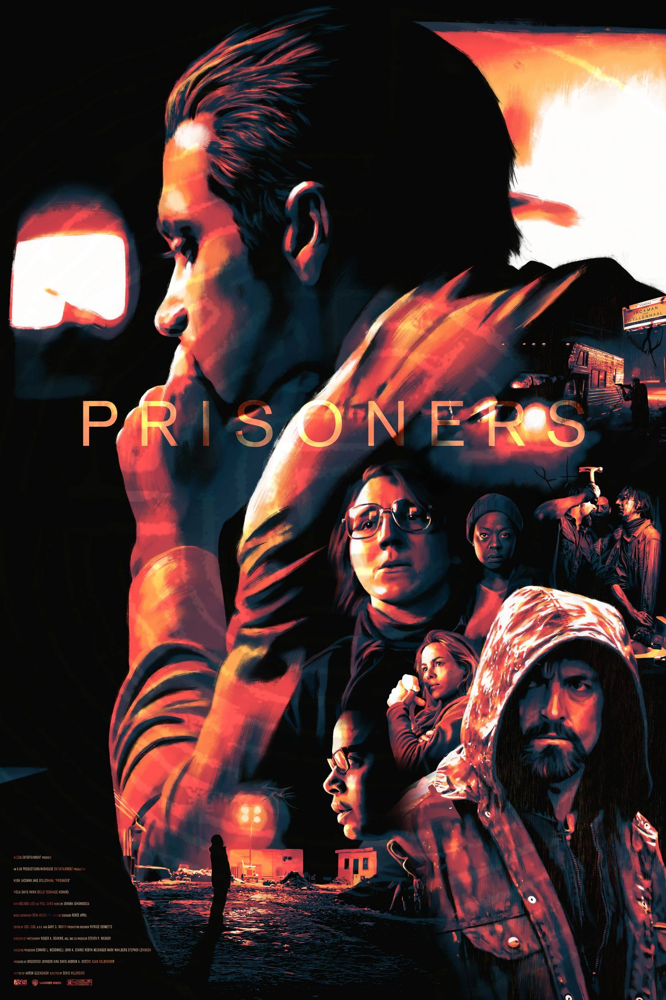
PRISONERS
"Prisoners" é um filme de suspense dirigido por Denis Villeneuve, lançado em 2013. O filme é estrelado por Hugh Jackman, Jake Gyllenhaal, Viola Davis, e outros. A trama gira em torno do desaparecimento de duas jovens meninas em uma pequena cidade americana. Quando a polícia parece não fazer progresso na investigação, um pai desesperado, interpretado por Hugh Jackman, decide tomar medidas drásticas para encontrar sua filha. Enquanto isso, um detetive dedicado, vivido por Jake Gyllenhaal, lidera a investigação, seguindo pistas complexas e sombrias. "Prisoners" é elogiado por sua atmosfera tensa, performances sólidas e narrativa envolvente. O filme aborda temas de moralidade, justiça e desespero humano, deixando o público tenso até o final.
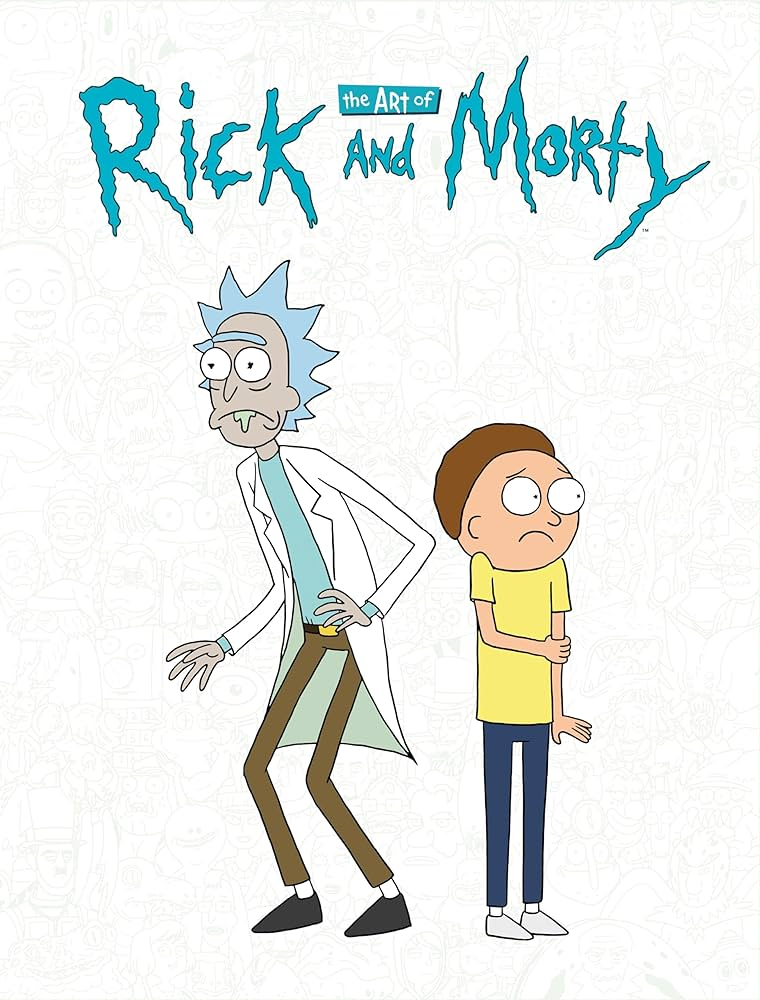
RICK AND MORTY
"Rick and Morty" é uma jornada intergaláctica através do absurdo, onde a comédia se entrelaça com a reflexão filosófica e a crítica social. A série não tem medo de desafiar tabus e de explorar temas complexos, como a natureza da existência e a ética da ciência, tudo isso enquanto mantém uma narrativa vibrante e cheia de reviravoltas. Com sua habilidade de equilibrar humor irreverente com momentos de profundidade emocional, "Rick and Morty" continua a ser uma fonte de entretenimento e inspiração para seus espectadores, consolidando seu lugar como uma das animações mais impactantes e duradouras da cultura contemporânea.